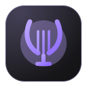

<!doctype html>
<html lang="en" data-screens="glimpse,media,notification,dock">
<head>
<meta charset="utf-8">
<title>Around NyxOS — Nyx Lyra mockups</title>
<link rel="stylesheet" href="../bar/tokens.css">
<link rel="stylesheet" href="../bar/bar.css">
<link rel="stylesheet" href="../dock/dock.css">
<script src="../bar/parts.js"></script>
<script src="../dock/dock.js"></script>
<style>
  /* Covers the bar mockups don't have (from ../polish/mock.css). */
  .g3 { --g: linear-gradient(135deg, #f6d365, #fda085); --fx: radial-gradient(circle at 30% 70%, rgba(0,0,0,.18) 0 30%, transparent 31%); }
  .g11 { --g: linear-gradient(135deg, #ff512f, #dd2476); --fx: repeating-linear-gradient(-45deg, rgba(255,255,255,.08) 0 6px, transparent 6px 18px); }
  .g12 { --g: linear-gradient(160deg, #0b0b0d, #3a3a40); --fx: radial-gradient(circle at 50% 40%, rgba(242,181,69,.85) 0 16%, transparent 17%); }
  .g16 { --g: linear-gradient(135deg, #000428, #004e92); --fx: radial-gradient(circle at 80% 20%, rgba(76,201,214,.6) 0 12%, transparent 13%), linear-gradient(0deg, rgba(0,0,0,.45), transparent 45%); }
  /* Glimpse with the music panel in its dropdown slot (728 × 230, as quickshell/Glimpse/panels). */
  .glim { position: absolute; z-index: 30; left: 50%; top: 150px; transform: translateX(-50%); width: 780px; padding: 10px; }
  .gsearch { display: flex; align-items: center; gap: 10px; height: 44px; padding: 0 12px; font-size: 16px; }
  .gsearch .ic { width: 18px; height: 18px; color: var(--dim-text); }
  .gsearch .caret { width: 1.5px; height: 20px; background: var(--accent); margin-left: -8px; }
  .gpanel { margin: 6px 2px 8px; padding: 14px; border-radius: 11px; background: color-mix(in srgb, var(--text) 4%, transparent); height: 258px; display: flex; flex-direction: column; }
  .gpanel .gp-top { display: flex; gap: 16px; flex: 1; min-height: 0; }
  .gpanel .gp-l { width: 400px; flex: none; display: flex; flex-direction: column; gap: 10px; }
  .gpanel .src { display: flex; align-items: center; gap: 7px; font-size: 11.5px; color: var(--dim-text); }
  .gpanel .src .app { width: 16px; height: 16px; border-radius: 5px; }
  .gpanel .src b { color: var(--text); font-weight: 600; }
  .gpanel .nowr { display: flex; gap: 14px; align-items: center; }
  .gpanel .nowr .t { font-size: 15px; font-weight: 600; }
  .gpanel .prog { display: flex; flex-direction: column; gap: 4px; }
  .gpanel .prog .times { display: flex; justify-content: space-between; font-size: 11px; color: var(--text-tertiary); }
  .gpanel .ctl { display: flex; align-items: center; gap: 6px; }
  .gpanel .ctl .playb { width: 32px; height: 32px; border-radius: 7px; background: var(--accent); color: var(--on-accent); display: inline-flex; align-items: center; justify-content: center; }
  .gpanel .ctl .playb .ic { width: 15px; height: 15px; }
  .gpanel .ctl .sl { flex: 1; margin-left: 8px; }
  .gpanel .gp-r { flex: 1; min-width: 0; display: flex; flex-direction: column; gap: 2px; }
  .gpanel .gp-r .glabel { margin: 0 0 4px 6px; }
  .gpanel .plrow { display: flex; align-items: center; gap: 10px; height: 30px; padding: 0 8px; border-radius: 7px; font-size: 12.5px; }
  .gpanel .plrow .art { width: 20px; height: 20px; border-radius: 5px; flex: none; }
  .gpanel .plrow.sel { background: var(--nav-active); }
  .gpanel .foot { display: flex; align-items: center; justify-content: space-between; padding-top: 8px; }
  .gpanel .foot .flat { display: inline-flex; align-items: center; gap: 6px; color: var(--dim-text); font-size: 12.5px; }
  .gpanel .foot .flat .ic { width: 15px; height: 15px; }
  .gres { display: flex; flex-direction: column; gap: 1px; }
  .gres .glabel { margin: 8px 0 4px 10px; }
  .grow2 { display: flex; align-items: center; gap: 12px; height: 46px; padding: 0 10px; border-radius: 9px; }
  .grow2.sel { background: var(--nav-active); }
  .grow2 > .app, .grow2 > .gi { width: 28px; height: 28px; border-radius: 8px; flex: none; }
  .grow2 > .gi { display: inline-flex; align-items: center; justify-content: center; background: var(--field); color: var(--dim-text); }
  .grow2 > .gi .ic { width: 15px; height: 15px; }
  .grow2 .t { font-weight: 500; font-size: 13px; }
  .grow2 .t .arg { color: var(--text-tertiary); font-weight: 400; }
  .grow2 .d { font-size: 12px; color: var(--dim-text); margin-top: 1px; }
  .grow2 .k { font-size: 11px; color: var(--text-tertiary); }
  /* A notification, top right under the bar. */
  .notif { position: absolute; z-index: 30; right: 12px; top: calc(var(--top, 40px) + 10px); width: 380px; padding: 12px; border-radius: 15px; background: var(--popover); border: 1px solid var(--border); box-shadow: 0 8px 30px color-mix(in srgb, var(--shadow) 60%, transparent); }
  .notif .nh { display: flex; align-items: center; gap: 8px; font-size: 12px; color: var(--dim-text); }
  .notif .nh img { width: 18px; height: 18px; }
  .notif .nh b { color: var(--text); font-weight: 600; }
  .notif .nb { display: flex; gap: 12px; align-items: center; margin-top: 10px; }
  .notif .nb .t { font-weight: 600; font-size: 14px; }
  .notif .na { display: flex; gap: 6px; margin-top: 12px; }
</style>
</head>
<body>
<script>
  // Lyra beside Nyx Music in the bar, Glimpse, the dock and notifications.
  Object.assign(P, {
    lyra: '<path d="M7 3.5C5 8 6.2 13.6 10 15.5M17 3.5c2 4.5.8 10.1-3 12M7.3 7h9.4M10 7.5v8M12 7.5v9M14 7.5v8M12 16.5v3.5M9.5 20.5h5"/>',
    mini: '<rect x="3" y="4.5" width="18" height="15" rx="2.5"/><rect x="11.5" y="11.5" width="6.5" height="5" rx="1.2" fill="currentColor" stroke="none"/>',
    headphones: P.headphones || '<path d="M4 15v-3a8 8 0 0 1 16 0v3"/><rect x="3" y="14" width="4.5" height="6.5" rx="1.5"/><rect x="16.5" y="14" width="4.5" height="6.5" rx="1.5"/>',
  });
  APPS.lyra = ["lyra", "violet", "Lyra"];
  const LYRA_ICON = '';
  DOCK.lyra = { i: LYRA_ICON, n: "Lyra", w: 1, playing: true };
  DOCK.music.playing = false;
  PINS.splice(PINS.indexOf("music") + 1, 0, "lyra");
  const qr = (g, t, a, d) => `<div class="qrow">${cover(28, g, 5)}<div class="grow"><div class="pt ell small">${t}</div><div class="ps">${a}</div></div><span class="ter xs tnum">${d}</span></div>`;

  const lyraPop = () => `<div class="mplayers"><span class="chip on">${app("lyra")}Lyra</span><span class="chip">${app("music")}Music<span class="ter" style="font-weight:400">paused</span></span><span class="grow"></span><button class="ibtn sm" title="Play on">${ic("cast")}</button></div>
    <div class="mhero">${cover(96, "g7", 10)}<div class="grow"><div class="mtitle2">Midnight City</div><div class="dim">M83</div><div class="ter small">Hurry Up, We’re Dreaming · 2011</div></div><button class="ibtn sm acc" title="Unlike">${ic("heartf")}</button></div>
    <div class="seek"><span class="tnum ter xs">1:42</span>${rail(42)}<span class="tnum ter xs">4:03</span></div>
    <div class="mbig">${ic("shuffle", "ter")}${ic("prev")}<span class="playb">${ic("pause")}</span>${ic("next")}${ic("repeat", "acc")}</div>
    ${slider("volume", 70, "", "")}
    ${gl("Up next in Lyra", `<span class="link xs">Queue</span>`)}
    ${qr("g7", "Reunion", "M83", "3:55")}${qr("g12", "Instant Crush", "Daft Punk", "5:37")}
    ${pfoot("Open Lyra")}`;

  const glimpse = () => `<div class="pop glim">
    <div class="gsearch">${ic("search")}<span>music</span><span class="caret"></span><span class="grow"></span><span class="kbdk">Ctrl Enter opens Lyra</span></div>
    <div class="gpanel"><div class="gp-top">
      <div class="gp-l"><div class="src">${app("lyra")}<b>Lyra</b>YouTube Music · playing</div>
        <div class="nowr">${cover(80, "g7", 11)}<div class="grow"><div class="t">Midnight City</div><div>M83</div><div class="dim small">Hurry Up, We’re Dreaming</div></div></div>
        <div class="prog">${rail(42)}<div class="times tnum"><span>1:42</span><span>4:03</span></div></div>
        <div class="ctl"><button class="ibtn" title="Previous (Left)">${ic("prev")}</button><span class="playb" title="Pause (Space)">${ic("pause")}</span><button class="ibtn" title="Next (Right)">${ic("next")}</button>${slider("volume", 70, "", "")}</div></div>
      <div class="gp-r"><span class="glabel">Your playlists</span>${[["g16", "Late night coding"], ["g11", "Running"], ["g5", "Focus"], ["g3", "2026 favorites"], ["g10", "My Supermix"]].map(([g, n], i) => `<div class="plrow ${i === 0 ? "sel" : ""}"><span class="art ${g}"></span>${n}</div>`).join("")}</div>
    </div>
    <div class="foot"><span class="flat">${ic("headphones")}Bluetooth headphones</span><span class="btn sm">Open Lyra</span></div></div>
    <div class="gres">
      <div class="grow2 sel">${app("lyra")}<div class="grow"><div class="t">Lyra</div><div class="d">YouTube Music · playing Midnight City</div></div><span class="k">Panel · Enter</span></div>
      <div class="grow2">${app("music")}<div class="grow"><div class="t">Music</div><div class="d">Your music, radio and podcasts · paused</div></div><span class="k">Panel</span></div>
      <span class="glabel">Commands</span>
      <div class="grow2"><span class="gi">${ic("play")}</span><div class="grow"><div class="t">lyra play <span class="arg">song, album or artist</span></div><div class="d">Search YouTube Music and play the best match</div></div></div>
      <div class="grow2"><span class="gi">${ic("pause")}</span><div class="grow"><div class="t">lyra pause</div><div class="d">Pause Lyra</div></div></div>
      <div class="grow2"><span class="gi">${ic("play")}</span><div class="grow"><div class="t">music play <span class="arg">playlist</span></div><div class="d">Play one of your playlists in Music</div></div></div>
    </div></div>`;

  const notif = () => `<div class="notif"><div class="nh">${LYRA_ICON.replace('class="ai"', "")}<b>Lyra</b>now<span class="grow"></span><button class="ibtn sm" title="Dismiss">${ic("x")}</button></div>
    <div class="nb">${cover(56, "g7", 8)}<div class="grow"><div class="ter xs">Now playing</div><div class="t">Midnight City</div><div class="dim small">M83 · Hurry Up, We’re Dreaming</div></div></div>
    <div class="na"><span class="btn sm">${ic("pause")}Pause</span><span class="btn sm">${ic("next")}Next</span><span class="grow"></span><span class="btn sm" style="background:none">Open Lyra</span></div></div>`;

  const lyraCard = () => `<div class="dch">${LYRA_ICON}<div class="grow"><b>Lyra</b><div class="ps">Playing · YouTube Music</div></div><button class="ibtn sm" title="Show windows">${ic("windows")}</button></div>
    <div class="dnow">${cover(56, "g7", 9)}<div class="grow"><div class="pt">Midnight City</div><div class="ps">M83 · Hurry Up, We're Dreaming</div>
      <div class="dnc"><button class="ibtn sm">${ic("prev")}</button><button class="ibtn playb">${ic("pause")}</button><button class="ibtn sm">${ic("next")}</button><span class="grow"></span><button class="ibtn sm acc">${ic("heartf")}</button></div></div></div>
    ${rail(42, "thin dseek")}
    ${gl("Your playlists")}
    <div class="drec">${[["g16", "Late night coding", "48 songs"], ["g11", "Running", "32 songs"], ["g10", "My Supermix", "YouTube Music"]].map(([g, t, a]) => `<div class="drr">${cover(34, g, 6)}<div class="grow"><div class="ell">${t}</div><div class="ps ell">${a}</div></div></div>`).join("")}</div>
    <div class="msep"></div>
    <div class="menu">
      <div class="mi">${ic("mini")}Mini-player<span class="grow"></span><span class="kbdk">Ctrl M</span></div>
      <div class="msep"></div>
      <div class="mi hov">${ic("pin")}Keep in Dock<span class="grow"></span>${ic("check", "acc sm")}</div>
      <div class="mi">${ic("power")}Quit<span class="grow"></span><span class="ter xs">Stops the music</span></div>
    </div>`;
  const nowTile = `<div class="dt nowp" id="d-now"><span class="ai nowart">${cover(48, "g7", 10)}<span class="npl">${ic("pause")}</span></span><span class="dprog"><b style="width:42%"></b></span></div>`;

  const N = ["ok", "New"];
  const S = {
    glimpse: {
      pops: glimpse(), veil: true,
      name: "Glimpse: music", rule: N,
      desc: "Typing music lists both players' panels first, the one playing on top. Lyra's panel is the shared media panel with its source named: what's playing, the controls and volume, and your YouTube Music playlists (Up and Down, Enter plays). Enter moves into the panel, Ctrl+Enter opens Lyra. lyra … commands come from the same action registry as nyx lyra … in a terminal.",
    },
    media: {
      pops: pop(lyraPop(), "i-media", 370),
      name: "Bar media popover", rule: ["ok", "Clearer"],
      desc: "The bar follows whichever player is playing (through MPRIS), not Lyra in particular. The chips at the top switch between Lyra and Music; the one paused says so. Media keys go to the same player the bar shows, so nothing competes for them. Open Lyra is the popover's one link to the app.",
    },
    notification: {
      pops: notif(), windows: true,
      name: "Track change", rule: N,
      desc: "An optional notification when the song changes while Lyra isn't in front (off by default; Settings, Playback). It replaces the previous one rather than stacking, and its Pause and Next go through the same commands as the player.",
    },
    dock: {
      dock: dock({ extraEnd: `${nowTile}${sep("thin")}`, hov: "lyra" }),
      pops: above(lyraCard(), "d-lyra", 330, "center"),
      name: "Dock", rule: N,
      desc: "Lyra sits beside Music, each with its own icon. Its card has what's playing with controls, your playlists, the mini-player and Quit; with Keep playing when closed on, Lyra stays in the dock while it plays and the card reopens the window. The now-playing chip before the folders shows the cover of whatever plays.",
    },
  };
  const s = S[SCREEN] || S.glimpse;
  screen({ dockHtml: s.dock || dock(), pops: s.pops, windows: s.windows, veil: s.veil, caption: { name: s.name, rule: s.rule, desc: s.desc } });
</script>
</body>
</html>
